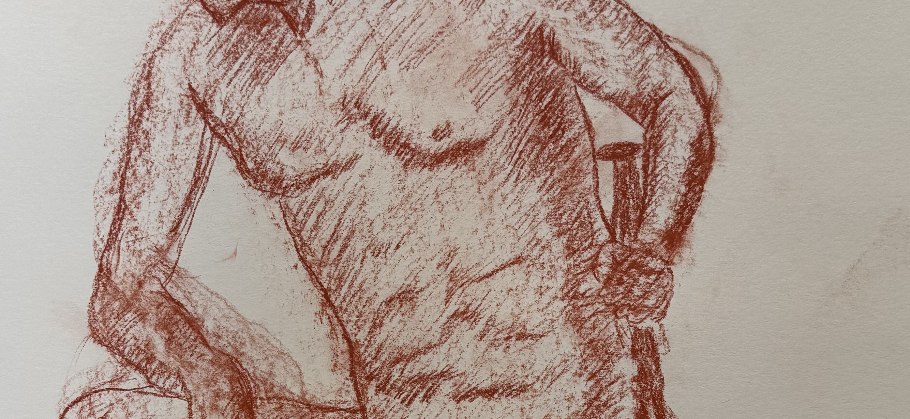
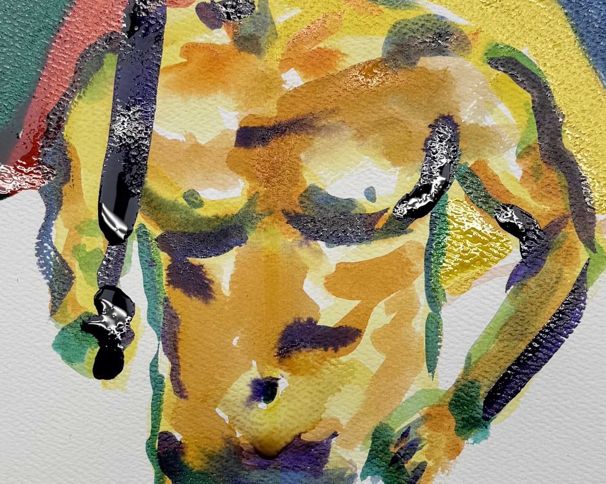

Torso Study 01: Torso Study
Medium: Oil pastel on paper
Focus: Core muscle groups

Torso Study 02: Shoulder Study
Medium: Oil pastel on paper
Focus: Shoulder and upper back connection

Torso Study 03: Anatomical Drawing
Medium: Red conte on paper
Focus: Muscle structure and form

Torso Study 04: Value Study
Medium: Black conte on paper
Focus: Light and shadow on form

Torso Study 05: Expressive Color
Medium: Watercolor on paper
Focus: Gestural color expression